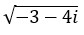
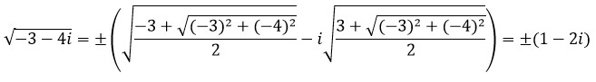
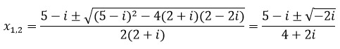
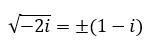
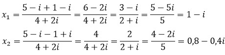
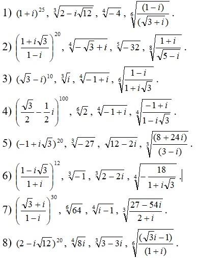

корень n - й степени из единицы и произвольного комплексного числа
примеры решения задач
Пример 1.
Вычислите: 
Решение.
Воспользовавшись формулой извлечения корня из комплексного числа, имеем

Ответ: ±(1 - 2i).
Пример 2.
Решите уравнение: (2 + i)x2 - (5 - i)x + (2 - 2i) = 0.
Решение.
По формуле корней квадратного уравнения имеем:

Извлекая корень квдратный из числа -2i, получаем
.
Следовательно,
.
Ответ: 1 - i; 0,8 - 0,4i.
проверь себя
Задание 1.
С помощью формулы Муавра вычислите (1 - i)40
1) 410
2) 212
3) 412
4) 216
5) 48
Ответ:
Задание 2.
С помощью формулы Муавра вычислите (-1 - i√3)30
1) 232
2) 220
3) 415
4) 416
5) 410
Ответ:
Задание 3.
С помощью формулы Муавра вычислите (-√3 - i)42
1) 242
2) -242
3) 240
4) 421
5) -442
Ответ:
Задание 4.
С помощью формулы Муавра вычислите (-4 - 4i)20
1) 3210
2) 1610
3) 410
4) -3210
5) -1610
Ответ:
Задание 5.
С помощью формулы Муавра вычислите (-1 + i)28
1) 1
2) 214
3) -214
4) 428
5) -428
Ответ:
Задание 6.
С помощью формулы Муавра вычислите (-√3 + i)36
1) 4 16
2) 4 18
3) 16 8
4) 16 10
5) 4 20
Ответ:
Задание 7.
С помощью формулы Муавра вычислите (1 - i)24
1) 8 4
2) -84
3) 43
4) 210
5) -210
Ответ:
Задание 8.
С помощью формулы Муавра вычислите (1 + i)12
1) -16
2) 16
3) 32
4) 64
5) -64
Ответ:
Задание 9.
С помощью формулы Муавра вычислите (-1 - i)24
1) 2 10
2) 4 10
3) 2 24
4) 8 6
5) 16 3
Ответ:
Задание 10.
С помощью формулы Муавра вычислите (-1 + i√3)30
1) 4 4
2) 4 6
3) 8 8
4) 8 10
5) 8 12
Ответ:
реши сам
Задание 1.
Вычислите следущие корни:
